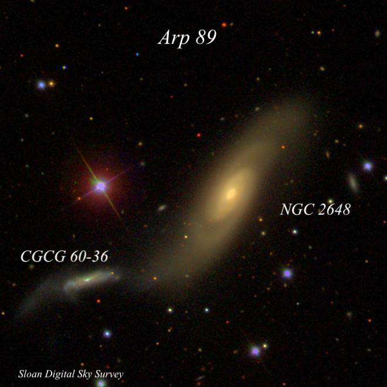
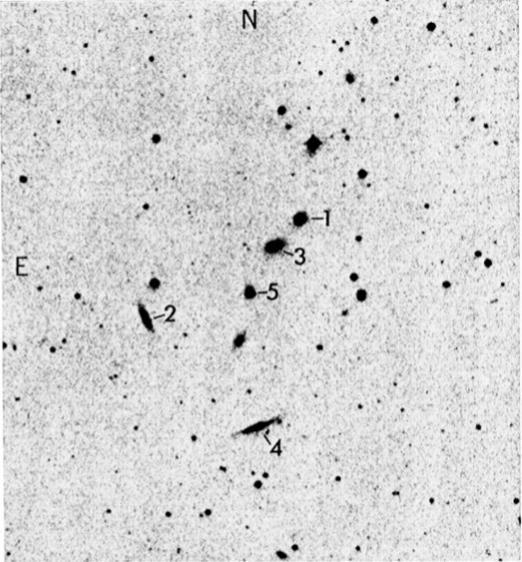

The MKW 3 Compact Septet
- Name: MKW 3, WBL 360, CGCG Septet
- Constellation: Virgo
- Size: 6'
- Mag: each 15-16B
- Type: Compact Group
Any fan of compact groups is familiar with Stephan's Quintet (HCG 92), Seyfert's Sextet (HCG 79) and Copeland's Septet (HCG 57). But MKW 3, another excellent septet challenge, seems to have flown below amateur radar! Just like the more famous Copeland's Septet, this compact septet is squeezed into a mere 6' of sky and even the magnitude range is similar (MKW 3 is a bit fainter). Furthermore, 4 of the members are arranged equally spaced in a neat 3' chain!

So why has MKW 3 escaped notice? The other groups were discovered visually and contain NGC numbers. Furthermore, Paul Hickson included them in his famous catalogue of compact groups. But MKW 3 was discovered on the POSS and contains only CGCG, MCG and PGC designations. The labeled image above gives all the CGCG designations. As far as catching my attention...
In 1974 W.W. Morgan, Susan Kayser and Richard White carried out a search of 73 northern POSS plates looking for potential giant cD galaxies lurking in poor clusters, where they are not generally found. Their paper titled "cD galaxies in poor clusters" was published in the Astrophysical Journal, Vol. 199, p. 545 - 548 and included 12 northern candidates (MKW 1-12) as well as 4 supplementary groups. Their search continued and a second paper ("cD galaxies in poor clusters. II") by Albert, White, and Morgan was published in 1977, resulting in AWM 1-7. In March 2011, I highlighted AWM 1 in a Sky & Tel "Going Deep" article.
As far as MKW 3, the entire septet fits nicely in a 11' field using my 24-inch at 375x (6mm Delos) and requires just enough work to be a little challenging to capture all 7 members. CGCG 12-95 is the brightest member and appeared fairly faint, elongated 3:2 WNW-ESE, 25"x16", brighter core. Visually, the faintest couple of galaxies seem a bit below the usual CGCG limit (15.7pg), with CGCG 12-97, a thin edge-on at the south end of the group, the most challenging.
I'm surprised Hickson didn't include this group in his catalogue, though perhaps it didn't quite meet the isolation criteria. What is the smallest aperture that can capture the entire septet? (Image below from the MKW paper)

“GIVE IT A GO AND LET US KNOW”
GOOD LUCK AND GREAT VIEWING!